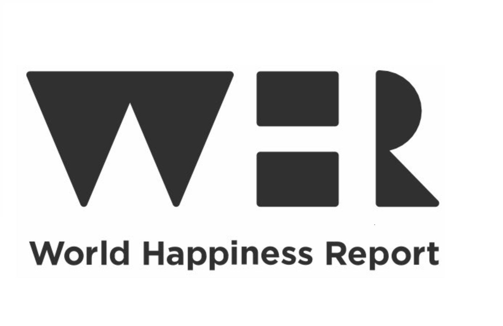
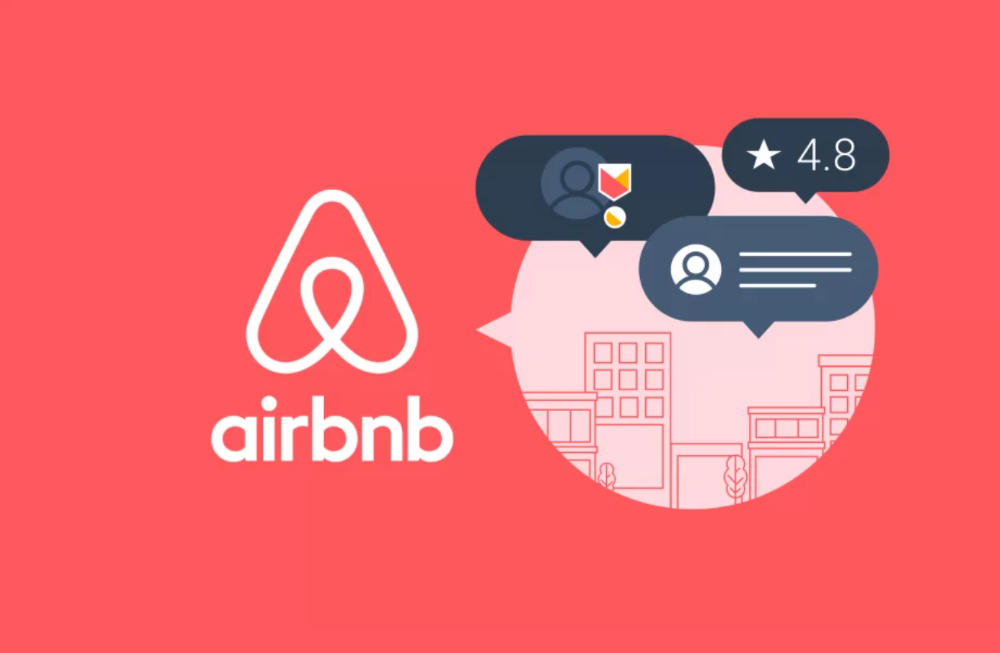
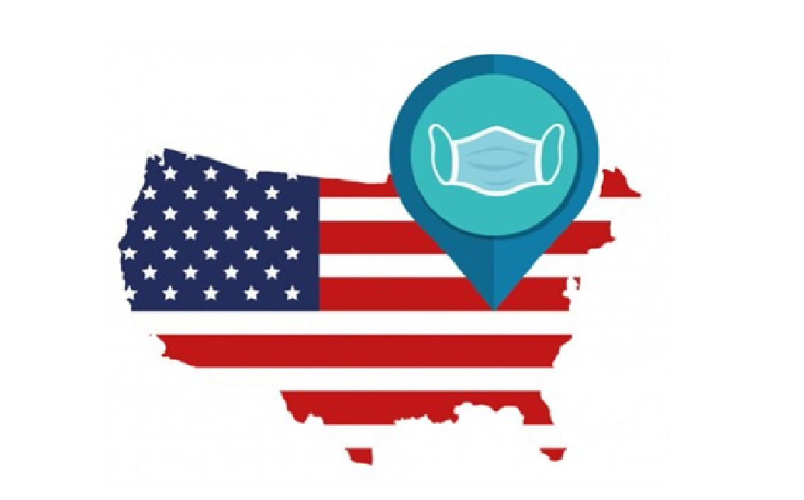

Hi, I’m Ioana, a Data Analyst with a strong Customer Service background.My previous jobs in the IT and Tourism industries have taught me how to understand problems from a customer’s perspective while keeping the focus on the business interest.
I am proficient in problem solving and eager to use my experience to analyze data and give insights for effective business decisions.
Identify trends, using key insights to turn challenges into solutions and using data visualizations for comprehensive reporting, improves company decision-making and projected growth.

The World Happiness Report is a valuable dataset that provides insights into the well-being and happiness of people in various countries. Data analysis and forecasting applied to World Happiness that is a landmark survey of the state of global happiness.
View Tableau Presentation

Python code and all important informations to analyse data on AirBnB reviews/ratings. Analysing data to look for possible patterns to predict if a listing is good or bad based on factors, we have control over while booking an accommodation.
View Tableau Presentation

The United States has an influenza season where more people than usual suffer from the flu. Hospitals and clinics experience increased patients and additional staff is needed to adequately treat everyone. There is risk of exposure and some age category is in more risk.
View Tableau Presentation
Rockbuster is a movie rental company that used to have stores around the world. They are facing competition from other streaming services. The management team plans to use its existing movie licenses to launch an online video rental service to stay competitive.
View Tableau Presentation
An online grocery store that operates through an app. It already has very good profit, but they want to uncover more information about their sales patterns.The objective of this analysis is to derive insights and suggest strategies for better segmentation based on criterias.
Game Co is a new video game companythat needs data to develop new games. The objective of this project is to have a better understanding of how the new games will perform in the market. It is an analysis of preferences and selling of products.